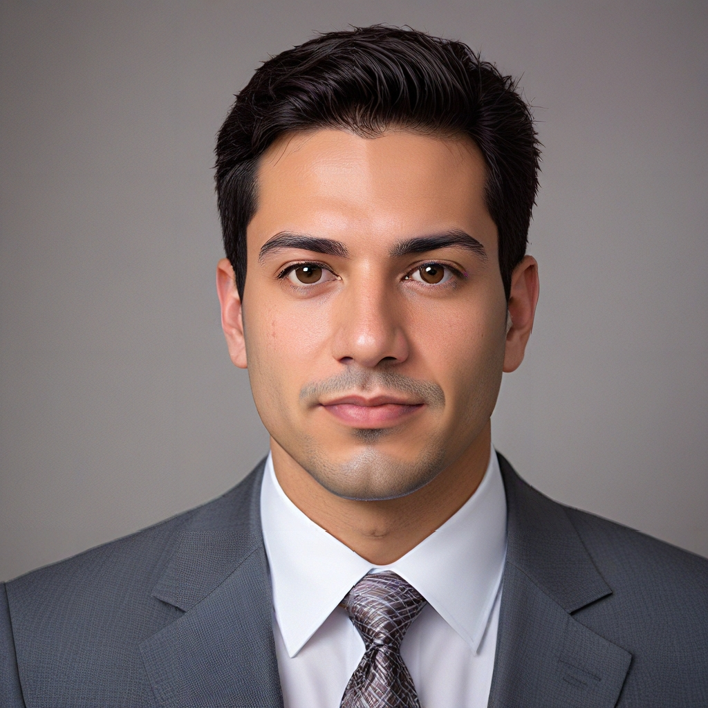

Запит 1:
"Чоловік у снігу"
Результат 1:
"Воїн у лісі, використовуйте середню висоту масштабу, як 78% від цього"
Результат 2:
З функцією портрету в AiCasso ви можете створювати дивовижні та унікальні портрети, просто описуючи те, що ви хочете. Це ідеально підходить для створення вражаючих зображень, чи хочете ви спокійну сцену, епічного воїна або будь-що інше, що ваша уява може вигадати!
"Чоловік у снігу"
Результат 1:
"Воїн у лісі, використовуйте середню висоту масштабу, як 78% від цього"
Результат 2:
Хочете додати трохи більше стилю або контролю до ваших згенерованих портретів? Ось кілька класних опцій, які ви можете налаштувати:
Пам'ятайте, ці параметри абсолютно необов'язкові. AiCasso досить поблажливий, тому вам не потрібно бути надто точним або граматично правильним. Просто опишіть, що ви хочете своїми словами, і AiCasso зробить магію. Насолоджуйтесь створенням ваших портретів!